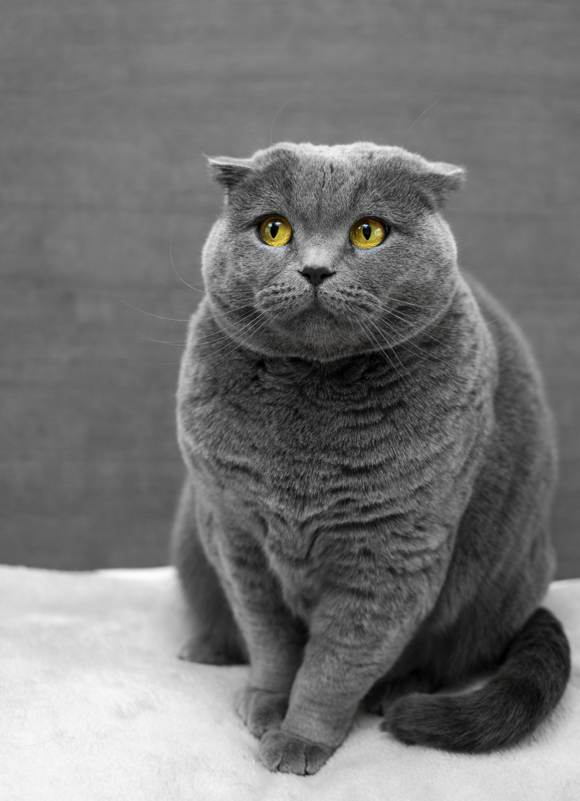

렝가 : 롤에서 내가 제일 많이 플레이 한 챔피언. 숙련도 점수는 다이아인데 실제 티어는 골드^^
 올라프 : 요새 시작한 챔피언, 라인전이 강력해서 게임하기가 쉽다. 하지만 내가 라인전을 이기건 지건 게임 자체에 영향을 못 미치는 것 같다.(역시 탑은 아닌거 같아서 다시 그만 둠 ㅋ) 마스터 이 : 앞으로는 렝가 뺏기거나 밴당하면 이거할까 함... 사실 재밌잖아 카직스 : 렝가 뺏기면 카직스나 마이 둘중 하나 하면 될듯 ㅎ요새 롤을 열심히 해서(공부는 안하고?ㅡㅡ) 티어를 골드3까지 올렸는데, 너무 쉽게 올라가다가 순식간에 벽에 부딪힌 것처럼 승률이 떨어지기 시작했다.
이게 나의 한계인가 싶다. 내 자존심을 생각하면 한 플레티넘까지는 티어를 올려보고 싶은데, 게임보다 인생에 대한 진로를 정하는게 너무 시급해서 공부를 하고 있다.
사실 아직 진로를 정하진 못했는데 나도 내가 뭘 좋아하고 뭘 해야 할지 몰라서 원래 하던 그리고 약갼의 흥미가 있던 생활코딩을 시작했다. 항상 시작이 반이라면서 시작만 해왔던 나지만 이번에는 칼을 뽑았으니 무라도 베고 싶다.
진심으로..